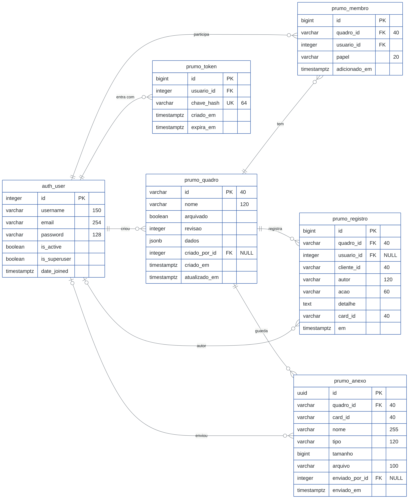

Este documento vale para a versão 1.1.0 com a interface de outubro de 2026. O esquema do banco e o formato JSON do quadro não mudaram em relação à 1.0.0.
O Prumo guarda dados de duas formas, e cada uma fica onde funciona melhor: o conteúdo do quadro num documento JSON e o que precisa de chave estrangeira em tabelas próprias.
| Dado | Onde fica | Por quê |
|---|---|---|
| Conteúdo do quadro (colunas, tarefas, etiquetas, automações, histórico recente) | Uma coluna jsonb em prumo_quadro.dados | A interface lê e salva o quadro inteiro e aplica as regras em JavaScript. Um documento por quadro deixa o salvamento atômico e o desfazer e refazer simples. |
| Quem pode acessar cada quadro | prumo_membro | Precisa de chave estrangeira, unicidade e consulta rápida por usuário. |
| Auditoria permanente | prumo_registro | O histórico dentro do JSON guarda só os últimos 500 itens. A tabela guarda tudo, com o usuário autenticado. |
| Arquivos | prumo_anexo e disco | Binários não devem ir para o JSON nem para o banco. |
| Sessões da API | prumo_token | Só o hash SHA-256 do token é guardado. |
Para que ninguém sobrescreva o trabalho de outra pessoa, cada quadro tem uma revisão. Todo PUT informa a revisão que o navegador conhece; o servidor trava a linha, compara e só grava se as duas forem iguais. É um controle otimista de concorrência (capítulo 5).
As novidades da interface de outubro de 2026 não criam tabelas nem campos. Colunas recolhidas, filtros rápidos, buscas recentes, tema e densidade são preferências de cada navegador, guardadas no localStorage junto com o estado local. A adição rápida de tarefas, a vista em lista e a idade das tarefas na coluna trabalham sobre o mesmo JSON do quadro descrito no capítulo 4, usando campos que já existiam (como movimentos e criadoEm).
0001_inicial.As cinco tabelas do Prumo e a tabela de usuários do Django, com tipos, chaves e as ligações entre elas. O diagrama completo está na página seguinte.
Excluir um quadro apaga em cascata seus membros, registros e anexos. Excluir um usuário apaga seus tokens e participações; nos quadros, registros e anexos, o autor vira NULL (SET NULL) e a auditoria é preservada.
| Ao excluir | Tabela | Efeito |
|---|---|---|
| Um quadro | prumo_membro | Apagado (CASCADE) |
prumo_registro | Apagado (CASCADE) | |
prumo_anexo | Apagado (CASCADE) | |
| Um usuário | prumo_token | Apagado (CASCADE) |
prumo_membro | Apagado (CASCADE) | |
prumo_quadro.criado_por_id | Vira NULL (SET NULL) | |
prumo_registro.usuario_id | Vira NULL (SET NULL) | |
prumo_anexo.enviado_por_id | Vira NULL (SET NULL) |

auth_user, do Django. Cada linha é uma relação N:1: o traço duplo fica no lado 1 e o pé de galinha, no lado N; o círculo indica que o lado pode ficar vazio. PK chave primária, FK chave estrangeira, UK valor único. Na última coluna, o tamanho do texto ou NULL quando o campo aceita vazio.Para gerar o diagrama de novo, rode mmdc -i docs/fonte/diagrama-er.mmd -o docs/fonte/diagrama-er.png -c docs/fonte/diagrama-er.json -s 3 -b white (Mermaid CLI).
Cada tabela do Prumo com os campos, o tipo no PostgreSQL, as restrições e para que serve.
| Campo | Tipo | Restrições | Descrição |
|---|---|---|---|
| id | varchar(40) | PK | Id gerado no navegador (ex.: qdr_3f9a1c2b7d4e), o mesmo de dados.id |
| nome | varchar(120) | NOT NULL | Cópia de dados.nome, para listar sem abrir o JSON |
| arquivado | boolean | NOT NULL, padrão false | Cópia de dados.arquivado |
| revisao | integer | NOT NULL, CHECK ≥ 0, padrão 1 | Soma 1 a cada salvamento aceito |
| dados | jsonb | NOT NULL | Documento completo do quadro (capítulo 4) |
| criado_por_id | integer | FK auth_user, NULL, SET NULL | Quem enviou o quadro |
| criado_em, atualizado_em | timestamptz | NOT NULL | Preenchidos automaticamente |
Índice: quadro_arquivado_nome_idx (arquivado, nome).
| Campo | Tipo | Restrições | Descrição |
|---|---|---|---|
| id | bigint | PK identity | |
| quadro_id | varchar(40) | FK prumo_quadro, CASCADE | |
| usuario_id | integer | FK auth_user, CASCADE | |
| papel | varchar(20) | CHECK em (admin, gerente, membro, visualizador) | Restrição membro_papel_valido |
| adicionado_em | timestamptz | NOT NULL |
Unicidade: membro_unico_por_quadro (quadro_id, usuario_id). Superusuários veem todos os quadros como administradores, sem precisar de linha nesta tabela.
| Campo | Tipo | Restrições | Descrição |
|---|---|---|---|
| id | bigint | PK identity | |
| quadro_id | varchar(40) | FK, CASCADE | |
| usuario_id | integer | FK, NULL, SET NULL | Usuário do token que salvou |
| cliente_id | varchar(40) | Id do registro gerado no navegador | |
| autor | varchar(120) | NOT NULL | Nome do usuário autenticado, ou “Automação” |
| acao | varchar(60) | NOT NULL | criou, moveu, editou, comentou, anexou, aplicou regra… |
| detalhe | text | Ex.: “Corrigir travamento: To Do → In Progress” | |
| card_id | varchar(40) | Tarefa afetada, quando houver | |
| em | timestamptz | NOT NULL | Momento da ação no navegador |
Índices: registro_quadro_em_idx (quadro_id, em DESC) e registro_quadro_card_idx (quadro_id, card_id). Unicidade parcial registro_cliente_unico (quadro_id, cliente_id) WHERE cliente_id <> '': se o navegador reenviar o mesmo registro depois de uma falha de rede, ele não é duplicado.
| Campo | Tipo | Restrições | Descrição |
|---|---|---|---|
| id | uuid | PK | Também compõe a URL de download |
| quadro_id | varchar(40) | FK, CASCADE | |
| card_id | varchar(40) | NOT NULL | Tarefa dona do anexo |
| nome, tipo | varchar(255), varchar(120) | Nome original e tipo MIME | |
| tamanho | bigint | CHECK ≥ 0 | Bytes |
| arquivo | varchar(100) | NOT NULL | Caminho relativo a PRUMO_MEDIA_ROOT: {quadro}/{uuid}-{nome} |
| enviado_por_id | integer | FK, NULL, SET NULL | |
| enviado_em | timestamptz | NOT NULL |
Índice: anexo_quadro_card_idx (quadro_id, card_id).
| Campo | Tipo | Restrições | Descrição |
|---|---|---|---|
| id | bigint | PK identity | |
| usuario_id | integer | FK auth_user, CASCADE | |
| chave_hash | varchar(64) | UNIQUE | SHA-256 do token; o token em si nunca é gravado |
| criado_em, expira_em | timestamptz | NOT NULL | Validade definida por PRUMO_TOKEN_HORAS |
As tabelas auth_user, auth_group, auth_permission, django_content_type e django_migrations são criadas pelo próprio Django.
O mesmo formato é usado no localStorage, na coluna dados, na exportação JSON e no arquivo exemplos/lancamento.json.
{
"id": "qdr_3f9a1c2b7d4e", "nome": "Sprint 14", "descricao": "", "cor": "#707645",
"modelo": "scrum", "arquivado": false, "bloquearDependencias": true,
"criadoEm": "2026-10-01T13:00:00.000Z", "atualizadoEm": "2026-10-21T19:40:12.000Z",
"colunas": [
{ "id": "col_a1", "nome": "Sprint Backlog", "tipo": "espera", "limiteWip": 0 },
{ "id": "col_a2", "nome": "Em andamento", "tipo": "andamento", "limiteWip": 4 },
{ "id": "col_a3", "nome": "Pronto", "tipo": "concluido", "limiteWip": 0 }
],
"etiquetas": [ { "id": "etq_b1", "nome": "Bug", "cor": "#6B1F33" } ],
"cards": [ {
"id": "crd_c1", "colunaId": "col_a2", "ordem": 0,
"titulo": "Corrigir login", "descricao": "...", "responsavel": "Carla Dias",
"prioridade": "alta", "etiquetas": ["etq_b1"], "inicio": "", "prazo": "2026-10-24",
"subtarefas": [ { "id": "sub_1", "texto": "Reproduzir", "feito": true } ],
"comentarios": [ { "id": "cmt_1", "autor": "Bruno Lima", "texto": "@Carla veja",
"em": "..." } ],
"anexos": [ { "id": "...", "nome": "erro.png", "tipo": "image/png",
"tamanho": 48213, "url": "/api/v1/anexos/..." } ],
"dependencias": ["crd_c0"],
"criadoEm": "...", "iniciadoEm": "...", "concluidoEm": null,
"movimentos": [ { "de": "col_a1", "para": "col_a2", "em": "..." } ]
} ],
"automacoes": [ { "id": "aut_1", "nome": "Review para o Bruno", "ativa": true,
"gatilho": { "tipo": "entrar", "colunaId": "col_a2" },
"acao": { "tipo": "atribuir", "valor": "Bruno Lima" } } ],
"historico": [ { "id": "reg_1", "em": "...", "autor": "Ana Souza", "acao": "moveu",
"detalhe": "Corrigir login: Sprint Backlog → Em andamento",
"cardId": "crd_c1" } ],
"membros": [ { "nome": "Ana Souza", "email": "admin@prumo.dev", "papel": "admin" } ]
}
| Campo | Valores aceitos |
|---|---|
colunas[].tipo | espera, andamento, concluido |
cards[].prioridade | urgente, alta, media, baixa |
cards[].prazo, inicio | AAAA-MM-DD ou vazio |
automacoes[].gatilho.tipo | entrar, criar |
automacoes[].acao.tipo | atribuir, prioridade, etiqueta, mover, concluir_subtarefas, prazo_dias |
| Datas com hora | ISO 8601 em UTC |
O servidor valida que id é texto de até 40 caracteres e que colunas e cards são listas. O limite do corpo da requisição é 5 MB. Quando quem salva tem o papel membro, o servidor compara colunas, etiquetas, automacoes e bloquearDependencias com a versão gravada e recusa (403) qualquer diferença.
A idade de uma tarefa na coluna, mostrada nos cards e na vista em lista, sai do último item de movimentos (ou de criadoEm, se ela nunca mudou de coluna). Nenhum campo novo foi criado para isso.
Na exportação, o arquivo envolve os quadros em {"formato": "prumo", "versao": 1, "referencia": "...", "quadros": [...]}, como em exemplos/lancamento.json.
Dois navegadores salvando o mesmo quadro na revisão 7. O primeiro PUT vence; o segundo recebe 409 e a versão atual.
BEGIN;
SELECT revisao FROM prumo_quadro WHERE id = 'qdr_demonstracao' FOR UPDATE;
UPDATE prumo_quadro SET dados = $1, nome = $2, arquivado = $3,
revisao = revisao + 1, atualizado_em = now()
WHERE id = 'qdr_demonstracao';
INSERT INTO prumo_registro (...) VALUES (...) ON CONFLICT DO NOTHING;
COMMIT;
GET ou no último PUT.PUT, o servidor abre uma transação e executa SELECT ... FOR UPDATE na linha do quadro.{revisao, dados} atuais e não grava nada.dados, faz revisao = revisao + 1, insere os registros novos com ON CONFLICT DO NOTHING e confirma.quadro pelo channel layer para o grupo quadro_{id}.Consultas em SQL para o PostgreSQL, lendo o JSON do quadro e as tabelas de auditoria e de membros.
SELECT q.nome AS quadro, c->>'titulo' AS tarefa, c->>'responsavel' AS responsavel,
(c->>'prazo')::date AS prazo
FROM prumo_quadro q
CROSS JOIN LATERAL jsonb_array_elements(q.dados->'cards') c
JOIN LATERAL jsonb_array_elements(q.dados->'colunas') col
ON col->>'id' = c->>'colunaId'
WHERE c->>'prazo' <> '' AND (c->>'prazo')::date < current_date
AND col->>'tipo' <> 'concluido' AND NOT q.arquivado
ORDER BY prazo;
SELECT q.nome,
round(avg(extract(epoch FROM ((c->>'concluidoEm')::timestamptz
- (c->>'criadoEm')::timestamptz)) / 86400)::numeric, 1) AS lead_time_dias
FROM prumo_quadro q
CROSS JOIN LATERAL jsonb_array_elements(q.dados->'cards') c
WHERE c->>'concluidoEm' IS NOT NULL
GROUP BY q.nome;
SELECT autor, count(*) AS movimentos FROM prumo_registro WHERE acao = 'moveu' AND em > now() - interval '30 days' GROUP BY autor ORDER BY movimentos DESC;
SELECT q.nome, m.papel FROM prumo_membro m JOIN prumo_quadro q ON q.id = m.quadro_id JOIN auth_user u ON u.id = m.usuario_id WHERE lower(u.email) = 'gerente@prumo.dev';
Com Docker não há nada a fazer: o serviço postgres do docker-compose.yml cria o banco e o usuário a partir do .env. Para um servidor próprio:
CREATE ROLE prumo LOGIN PASSWORD 'troque-esta-senha'; CREATE DATABASE prumo OWNER prumo ENCODING 'UTF8' TEMPLATE template0; \c prumo ALTER SCHEMA public OWNER TO prumo;
Depois, no .env ou no ambiente do servidor:
PRUMO_DB_ENGINE=postgresql PRUMO_DB_HOST=localhost PRUMO_DB_PORT=5432 PRUMO_DB_NAME=prumo PRUMO_DB_USER=prumo PRUMO_DB_PASSWORD=troque-esta-senha python manage.py migrate python manage.py criarusuario --email voce@empresa.com --nome "Seu Nome" --admin
Com SQLite (desenvolvimento), as mesmas tabelas existem; jsonb vira text, consultado com as funções JSON do SQLite.
Se você vai consultar o JSON com frequência (capítulo 6), crie um índice GIN:
CREATE INDEX quadro_dados_gin ON prumo_quadro USING gin (dados jsonb_path_ops);
docker compose exec postgres pg_dump -U prumo -Fc prumo > prumo.dump docker compose exec -T postgres pg_restore -U prumo -d prumo --clean < prumo.dump
Os anexos ficam no volume anexos (/dados/anexos no contêiner) e precisam entrar no backup junto com o banco.
Tokens vencidos são apagados a cada login do mesmo usuário. O histórico permanente cresce com o uso. Para limpar todos os tokens vencidos e manter só o último ano de histórico:
DELETE FROM prumo_token WHERE expira_em < now(); DELETE FROM prumo_registro WHERE em < now() - interval '1 year';